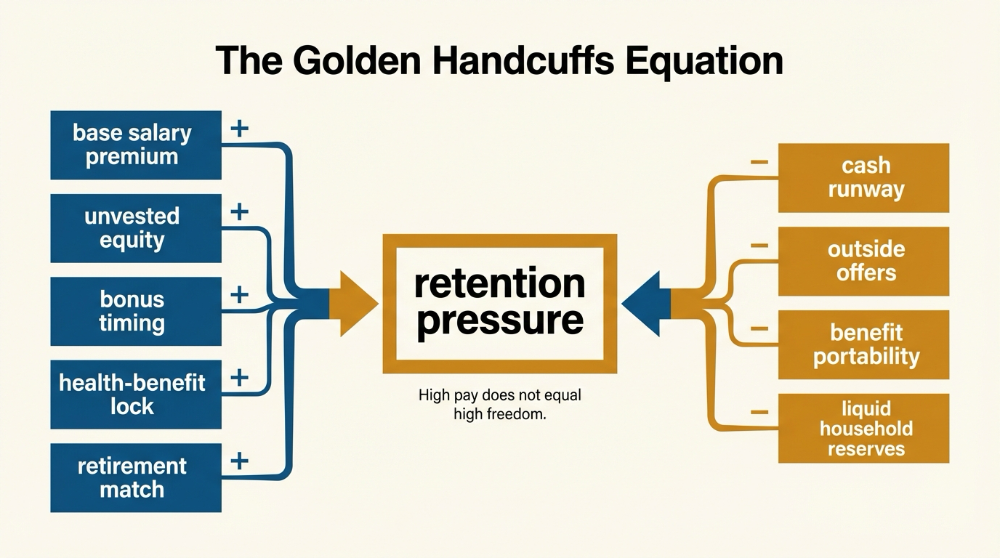
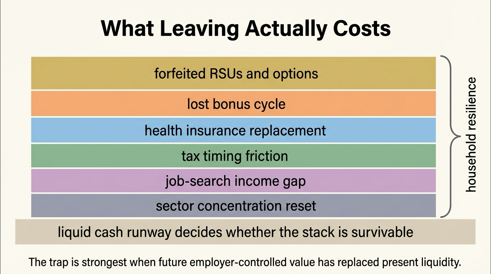

The Golden Handcuffs Equation
Golden handcuffs are usually described as an emotional problem. A well-paid worker hates the job, stays anyway, and tells themselves the money is too good to walk away from. The deeper issue is structural. A compensation package can raise reported income while making exit materially more expensive through vesting schedules, deferred bonuses, employer-tied insurance, concentration risk, and tax timing. The result is not just reluctance. It is reduced optionality.
This is why the topic belongs in WealthMeter rather than in generic career advice. Golden handcuffs are not a personality weakness. They are a balance-sheet equation. The package looks richer because it includes things you lose or impair by leaving. That design can make a worker feel wealthier on paper while becoming less free in practice.
Core thesis: golden handcuffs arise when compensation is deferred, contingent, concentrated, or benefit-linked enough that the cost of leaving rises faster than true household resilience. High total compensation can therefore mask a decline in strategic freedom.

What The Handcuffs Are Made Of
The first layer is unvested equity. Restricted stock, stock options, performance units, and refresh grants all make future income contingent on staying. That is the cleanest mechanical version of the lock. The worker is not merely giving up future upside by leaving. They are often surrendering compensation already mentally booked into net worth. Research on option compensation and unvested equity supports the retention interpretation. Firms use equity grants not only to motivate but to sort and retain employees, especially when the worker would otherwise discount concentrated company exposure more heavily than theory predicts.
The second layer is benefit dependence. Employment-linked health insurance still matters for mobility even after the Affordable Care Act reduced some of the most severe coverage losses after separation. The best current reading is not that job lock disappeared. It is that the penalty became smaller and more uneven. Recent NBER work shows that job loss still reduces insurance coverage, just less sharply than before ACA implementation. That means employer-linked coverage remains a real switching cost for many households, especially those with dependents, chronic conditions, or expensive care utilization.
The third layer is retirement and deferred compensation design. Vesting schedules on employer retirement contributions can look small next to salary and equity, but they matter precisely because they exploit timing. Recent evidence on 401(k) vesting schedules shows that many separations happen before full vesting and that forfeitures are concentrated among lower-income participants. That paper found little evidence of a causal retention benefit for firms, which is analytically useful. A compensation feature can still function as a worker-level handcuff even when it does not efficiently retain labor overall.
Why High Earners Still Get Trapped
The usual intuition is that high earners should have the most freedom because they make the most money. That confuses gross inflow with usable optionality. A worker with strong cash pay, but with a household budget calibrated to that pay, large unvested equity exposure, and benefit dependence may have less practical freedom than a slightly lower-paid worker with simpler compensation and larger liquid reserves.
The trap becomes more severe when equity concentration is added to identity concentration. If compensation, status, and future upside are all tied to one employer, leaving feels like an income loss, a wealth loss, and a status loss at once. This is the real equation behind the phrase. The worker is not optimizing only over salary. They are optimizing over a stack of contingent claims, many of which become visible only when the worker tries to leave.
That stack can also be mispriced by the worker. Brian Hall and Kevin Murphy argued years ago that the cost of stock options to firms often exceeds the value employees place on them because workers are undiversified and cannot trade the options freely. The practical version is still relevant. Employees may count the full headline grant in their wealth story while facing a very different risk-adjusted value if the firm stumbles or if departure occurs before vesting.

The Hidden Cost Is Optionality, Not Only Pay Forgone
The most important lost asset is time-adjusted freedom. A worker who cannot leave because a vesting date is six months away often tells themselves to wait. Then another grant refresh lands, or the next bonus cycle approaches, or a dependent's healthcare need makes continuity feel safer. The handcuffs tighten because the package is designed as a sequence, not a one-time cliff. The cost is not only the one tranche forfeited today. It is the way the household's future path keeps getting re-anchored to the same employer.
This is where the topic intersects with The Career Optionality Gap. Optionality depends on liquid reserves, portability, and the ability to absorb transition. Golden handcuffs work by shrinking those margins even when nominal compensation looks excellent. A worker can be objectively high income and still strategically illiquid.
How To Audit Whether Compensation Is Making You Richer Or Only More Attached
- Separate liquid pay from conditional pay. Count base salary and already-cashed compensation separately from unvested or contingent layers.
- Revalue employer equity conservatively. Concentrated company exposure should not be counted at full headline value in personal optionality planning.
- Price benefit disruption honestly. Model insurance replacement, deductible reset, and dependent coverage risk before assuming a move is painless.
- Track vesting cadence. If every six months feels like a bad time to leave, that is evidence of a structural lock, not merely bad luck.
- Measure runway off post-exit cash needs. A household with strong total compensation but weak liquid runway is more trapped than it appears.
This audit changes the question from “How much am I paid?” to “How much freedom does this compensation actually buy?” Those are not the same number. In many golden-handcuff situations, the second number is lower than the first by a wide margin.
Known, Inferred, And Unknown
| Category | Assessment |
|---|---|
| Known | Firms use unvested equity and deferred compensation structures in ways that can affect retention, sorting, and employee departure incentives. |
| Known | Employer-linked health insurance still changes mobility economics, even if post-ACA coverage losses are smaller than in earlier periods. |
| Known | Vesting schedules can produce real forfeitures at separation and those losses are often poorly understood by workers. |
| Inferred | Many high-income workers overstate true financial freedom because they count contingent employer-linked compensation as though it were already liquid household wealth. |
| Unknown | How much lifetime wealth workers lose by remaining too long in poor-fit roles because the perceived exit penalty is large relative to liquid reserves and outside options. |
The Practical Correction
The correction is not to reject deferred compensation. Some packages genuinely create wealth. The correction is to value it with the right discount rate. Compensation that vanishes on exit, that remains concentrated in one employer, or that depends on remaining until a moving target date is not equivalent to cash already under household control.
That is the golden handcuffs equation in plain terms. If the package increases your attachment faster than it increases your resilience, it is not only paying you. It is pricing your exit.
Further Reading Inside The Site
This article connects directly to The Career Optionality Gap, The Asset-Rich, Cash-Poor Paradox, and The Equity Compensation Trap. Together they show how high nominal compensation can still leave a household strategically exposed.
Source List
Oyer P, Schaefer S. Why Do Some Firms Give Stock Options to All Employees? An Empirical Examination of Alternative Theories. NBER Working Paper 10222. 2004.
Bergman NK, Jenter D. Employee Sentiment and Stock Option Compensation. NBER Working Paper 11409. 2005.
Hall BJ, Murphy KJ. The Trouble with Stock Options. NBER Working Paper 9784. 2003.
Madrian BC. Employment-Based Health Insurance and Job Mobility: Is There Evidence of Job-Lock?. NBER Working Paper 4476. 1993.
Schaller J, Zerpa M. Job Loss and Health Insurance Coverage Before and After the Affordable Care Act. NBER Working Paper 34874. 2026.
Carranza G, Goodman A. Retention or Regressivity? The Empirical Effects of 401(k) Vesting Schedules. SSRN. 2024, revised 2025.
U.S. Bureau of Labor Statistics. Employee Tenure in 2024. Published September 26, 2024.